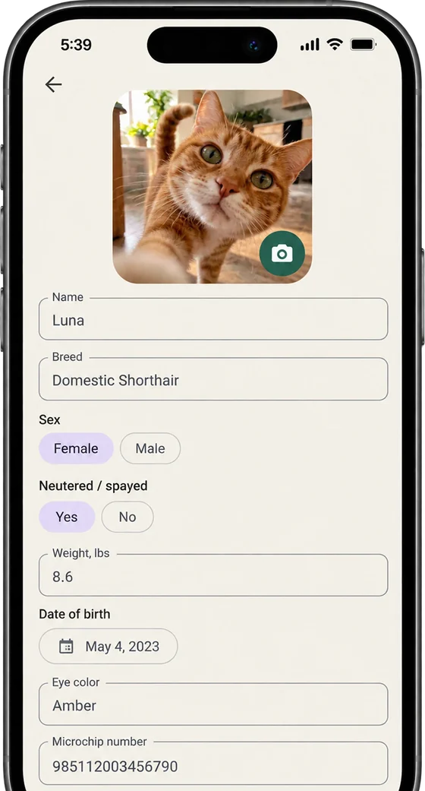
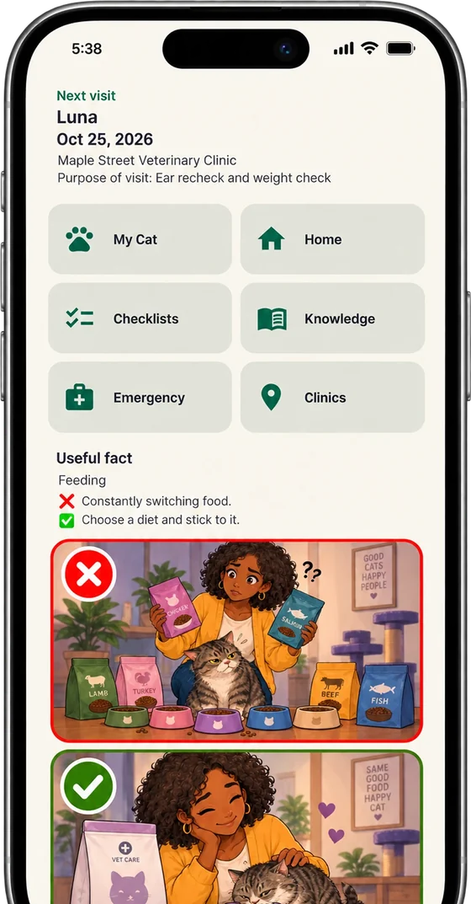
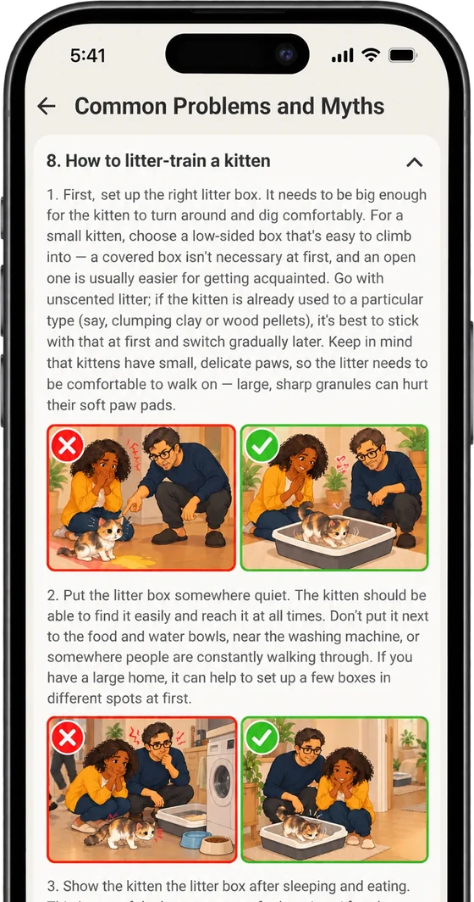

Для турботливих власників

Спокійна турбота про кішку
Поради для безпечного дому, база знань, чек-листи й перша допомога в термінових ситуаціях. Без реєстрації та реклами.



Чому Cat First
Без реєстраціїНі акаунта, ні пароля
Без реклами та аналітикиДані зберігаються лише на телефоні
14 мовМову можна вибрати в налаштуваннях застосунку
Android та iPhoneДані переносяться між ними через резервну копію
Теми
Усе це є й у застосунку
Тем: 13
Безпечний дім
- Небезпеки вдома
- Їжа і вода
- Вибір корму
- Клімат-контроль

Статей: 5
База знань
- Поширені проблеми та міфи
- Щеплення
- Знайомство двох кішок у квартирі
- Поведінка

Списків: 10
Чек-листи
- Поїздка до ветеринарної клініки
- Поява першого кошеняти
- Знайомство двох котів
- Переїзд у нову квартиру
Ситуацій: 18
Термінові ситуації
- Утруднене дихання
- Отруєння
- Стороннє тіло
- Судоми
Термінові ситуації
Покрокові дії, коли важлива кожна хвилина, і ознаки, за яких до ветеринара треба сьогодні.
Не замінює ветеринара
Інформацію в застосунку зібрано з відкритих джерел і досвіду власників котів. Вона не замінює консультацію та огляд у ветеринара. Рішення щодо здоров'я та догляду за улюбленцем ухвалює власник — у разі будь-яких сумнівів звернися до ветеринара.